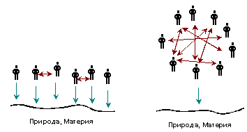
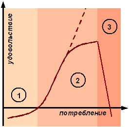

|
На
главную
Глава
2. Наука и Религия
Относительность
материализма
Для дальнейшего анализа нам
необходимо понять относительность материализма. Точнее, относительность
преобладающего в нашем сознании понимания материализма в приложении
к обществу и общественному сознанию.
Согласно основному закону развития,
закону отрицания отрицания, рано или поздно нам предстоит сделать
новый скачок, сделать шаг на новый виток спирали. Мы должны прийти
к отрицанию материалистической науки в том виде как она есть,
и к отрицанию отрицания идеализма и религии; к пониманию и науки,
и религии на новом уровне.
Несомненно, что сегодня в русском
обществе активно идёт процесс возврата к религии. Он вызван неспособностью
науки ответить на вопрос, куда и как будет и должно дальше развиваться
общество. Одним из главных недостатков науки является отсутствие
в ней понятий Добра и Зла. От того, удастся ли разрешить противоречия
между наукой и религией, зависит, получится ли у нас сделать скачок
и подняться на уровень выше, или общественное сознание вернётся
на более примитивный уровень.
Можно выделить два главных противоречия
между наукой и религией, без разрешения которых невозможно двигаться
дальше.
Первое
– отношение к первичности материи и сознания и, соответственно,
к объективности общественного развития.
Второе
– отсутствие связи между языком науки и языком религии; отрицание
наукой, нередко в насмешливой форме, религиозных знаний.
I.
Материализм
и сознание
Что первично, материя или сознание?
Идеализм утверждает, что сознание человека первично, а
внешний мир, материя – вторичны и субъективны, зависят от того,
кто их рассматривает. Материализм утверждает, что материя
– это объективная реальность, данная нам в ощущениях, она не зависит
от нашего сознания; материя первична и объективна, сознание –
вторично. Как видим, эти два подхода принципиально противоречивы.
Из идеализма и материализма
вытекают понятия Субъективного и Объективного.
Объективность
понимается как независимость получаемой картины от наблюдателя.
Например, не важно кто и где измерит массу одного литра чистой
воды, она всегда будет одинакова. Заметим, что для получения объективных
данных наука требует с исключительной точностью следовать правилам
наблюдений.
Субъективность
понимается как относительность результатов, их зависимость от
наблюдателя. Скажем, для одного человека литр воды будет тяжёлым,
для другого – лёгким.
Религия всегда придерживалась
идеализма. Все естественные науки, которые мы изучаем в школе
и университете, исходят из материалистического взгляда на мир.
Материализм сегодня господствует почти в любой стране мира, независимо
от политического строя. Наука утверждает, что научные методы и
знания объективны, религиозные же – субъективны.
Материализм
и общество
В применении к обществу,
материализм означает наличие объективных, не зависящих от человека,
законов развития общества. Развитие общества выглядит как некий
предопределённый путь, единственно возможный. Люди могут быстрее
или медленнее двигаться по этому пути, но они не могут свернуть
с него. Считается, что любая попытка шага в сторону обречена на
неудачу.
Смысл наук об обществе видится
в том, чтобы познать эти объективные законы, так же как познаются
законы физики или химии. Тот, кто совершит физическое открытие,
сможет первым применить его. Тот, кто первым познает общественный
закон, сможет первым сделать правильный шаг вперёд к прогрессу.
Если закон был познан правильно, то общество последует за первооткрывателем,
если же закон был познан неправильно, то рано или поздно общество
убедится в ошибке и объективно будет вынуждено вернуться
на правильную дорожку.
Материалистический подход к
истории и обществу господствует как в марксизме, так и в западной
экономике. Он восходит к первым открытиям механики и физики, к
детерминизму, к представлениям о мире как о сложной машине, которая,
подобно часовому механизму, была однажды заведена и продолжает
свой путь. Карл Маркс писал: «Как небесные тела, однажды начавшие
определенное движение, постоянно повторяют его, совершенно так
же и общественное производство, раз оно вовлечено в движение попеременного
расширения и сокращения, постоянно повторяет это движение».
Разница между марксизмом и западной
экономикой состоит в том, что каждая из этих теорий считает, что
именно она открыла единственно правильный закон – закон смены
общественных формаций в марксизме, либо объективные законы свободного
рынка на Западе.
Запад считает, что ошибочность
марксизма окончательно доказана гибелью СССР. Как бы сама история
подтвердила правильность теории свободного рынка, а за последствия
ошибки, эксперимента марксизма, теперь расплачиваются низким уровнем
жизни народы России.
Теория
Отражения
Давайте посмотрим на первичность
материи и понятие объективного с точки зрения теории отражения,
части диалектического материализма.
Теория отражения
говорит, что процесс познания заключается в формировании в сознании
человека образа материи, её отражения. Можно сказать, что в сознании
постоянно существует и развивается некоторая модель мира, или
картина мира. Понятия «отражение» и «модель» в данном случае –
синонимы.
У одного и того же явления или
предмета может быть сколь угодно много отражений и измерений.
Механика даёт один взгляд на литр воды, химия – другой, электротехника
– третий. Всё зависит от угла зрения. Именно поэтому наука требует
в точности воспроизвести угол зрения, требует досконально следовать
всем правилам наблюдений. Если весы будут неправильно настроены,
то результат определения массы не будет повторен. Под определённым
углом зрения 1+1=10.
Как же определяется истинность,
правильность отражения или модели? Критерием истинности созданной
картины мира является практика, то есть подтверждается
ли эта картина ежедневными наблюдениями и историей, или нет. Есть
также требование логической непротиворечивости, то есть модель должна быть непротиворечива в данный
момент для избранной цели.
Мы можем сказать, что «горизонт»
– это та грань, где хрустальный купол небес соприкасается с краем
земли; или «горизонт» – большой круг небесной сферы, плоскость
которого перпендикулярна к отвесной линии в месте наблюдения.
Обе эти модели возможны, но вторая гораздо больше подходит для
цели навигации.
Модели
науки и религии
Почему же наука не признаёт
религиозную точку зрения одной из возможных и истинных? Почему
наука заставляет всех людей смотреть на мир под весьма детерминированным,
узким углом зрения?
*
* *
Во-первых,
религиозный подход объявлен наукой не имеющим практического смысла.
Цель религии воспринимается наукой как удержание власти над людьми
через одурманивание их сознания. Наука не видит тот угол, с которого
религиозные знания имеют больше смысла, чем научные. Где этот
угол?
Цель науки – улучшение жизни
человека.
Способ науки – преобразование
природы.
Критерий успеха – чем сильнее
человек приспособит под свои желания природу, увеличит материальное
потребление, тем лучше. В начале своего развития наука выступала
за настолько сильное изменение природы, насколько это технически
возможно; постепенно она стала выступать за более разумное, ограниченное
изменение.
Цель религии – тоже улучшение
жизни человека.
Способ религии – преобразование
сознания человека. Целью религии никогда и не являлось
преобразование природы, но жизнь в гармонии с ней.
Критерий успеха – приближение
сознания человека к идеалу бога («по образу и подобию божьему»).
Тогда возникает вопрос: Что
лучше для улучшения жизни человека – преобразование природы или
преобразование сознания человека? Или когда лучше первое,
когда второе?
*
* *
Во-вторых,
религиозные знания не подтверждаются научной практикой. Поскольку
доказательств существования бога не обнаружено, соответственно
и цель религии выдумана, произвольна, субъективна, лишена смысла.
Но что есть практика, что есть
критерий истины, когда говорят не о неживом камне или металле,
который постоянен, а о быстро меняющемся сознании?
II.
Познание
и общение
Для разрешения противоречия
между наукой и религией выделим два главных и принципиально разных
процесса в жизни сознания (не тела) человека – познание и общение.
В процессе познания материального
мира сознание отражает материю, то есть оно создаёт отражение,
мысленный образ материи. Процесс познания сознания принципиально
отличается от познания неживого мира.
Мы можем смотреть на неживой
предмет с разных точек зрения, испытывать разные чувства, но при
этом сам предмет меняться не будет. Будет меняться только отражение
этого предмета в нашем сознании. Живой же человек (и даже животное)
будет менять своё поведение в зависимости от того, кто и как на
него смотрит. Ещё сильнее человек изменится в зависимости от того,
с кем и как он общается.
Что
отражает сознание в процессе общения, в процессе познания
другого человека? Естественно, оно отражает
сознание другого человека, готовое отражение. Сознание познаваемого
человека, в свою очередь отражает сознание познающего. Возникает
отражение отражения, множественное и взаимовлияющее.
При общении сознание, а не материя, становится первичным.
Практикой
при общении или при познании сознания является локальное
преобладающее сознание окружающих, группы, класса людей. Это
сознание и есть критерий истины, и эта истина всегда относительна,
субъективна. Это сознание локально, потому что человек может
общаться только с ограниченным числом людей.
Соответственно, если человек
проводит больше времени в отношениях с материальным миром и природой,
для него материя первична. Если же он в основном занят общением
с другими людьми, то для него сознание других людей первично.
Особенно если человек получает еду и прочее необходимое для жизни
от других людей, а не от природы.
Например, крестьяне или рабочие
завода мало общаются в процессе труда, они в основном взаимодействуют
с природой или с машинами, и так получают свой хлеб. Исследователи-учёные
в лабораториях тоже малообщительны и погружены в мир молекул и
формул. Жизнь же слуг, продавцов, священников или преподавателей
проходит в общении, через общение они получают средства к существованию.
Для них сознание – первично.
Продолжая эту мысль, если в
обществе преобладают люди, которые заняты работой с природой,
машинами или исследованиями материального мира, то такое общество
материалистично. Если же преобладают люди, которые большую
часть времени проводят в общении с другими людьми, и особенно,
если в результате этого они получают свой хлеб, то это общество
– идеалистическое.

На
рисунке слева – общество с преобладанием связей между людьми
и природой.
На
рисунке справа – общество с преобладанием связей людей
между собой.
Изменение
потребностей человека
По каким законам происходит
переход от материалистического сознания к идеалистическому? Этот
процесс удобно представить знакомой нам по предыдущей главе S-кривой.

Давайте проследим, как изменяются
потребности человека, например, в еде, в зависимости от её доступности.
На первом участке (1), на этапе
минимального удовлетворения, на этапе физически необходимого,
человек голоден, он думает только о том, чтобы насытиться. Если
у него мало денег, то он выбирает те продукты, которые дешевле
и быстрее его накормят.
На втором участке (2), когда
он уже сыт, наступает этап удовольствия. Человек начинает
соотносить цену и удовольствие от продуктов. Он готов заплатить
дороже, но поесть вкуснее. Какое-то время, чем больше и вкуснее
он ест, тем больше удовольствия он получает.
Ему кажется, что если он будет
продолжать есть, удовольствие будет увеличиваться бесконечно (штриховая
линия на рисунке). На самом деле происходит постепенное выравнивание
кривой, и дополнительная пища уже не приносит прежнего удовольствия.
В конечном счёте, человек достигает
этапа насыщения, изобилия (3), когда дальнейшая еда не
только бессмысленна, но и вредна. Кривая удовольствия разворачивается
и идёт вниз. Чем больше человек ест, тем хуже он себя чувствует.
К сожалению, многие люди обладают
сильной инерцией и неспособностью замечать точку насыщения, не
знают меры. Они полагают, что кривая идёт вверх бесконечно. Вместо
еды можно рассмотреть одежду, размер автомобиля, косметику, лекарства
и так далее. Потребление всегда будет подчиняться этой кривой.
*
* *
Теперь обобщим всё, что потребляет
человек, и рассмотрим изменение потребностей в зависимости от
материального достатка в целом.
Мы опять увидим три ярко выраженных
участка – этап необходимого, этап удовольствия и
этап насыщения. Обычно эти три этапа соотносят с чертой
бедности (или минимального прожиточного минимума), средним классом
и богатством.
Точки перехода от этапа к этапу
относительны и индивидуальны. Один человек не станет есть псевдо-пищу,
например, из Макдональдса даже от голода (чтобы не травиться);
другой будет рассматривать её как удовольствие. Для одного, пожилого,
человека большая квартира будет выше точки насыщения, поскольку
за ней сложно следить. Другому для полного удовольствия нужны
будут пять домов в разных городах мира. Но рано или поздно наступает
предел, когда дальнейшее личное материальное потребление не очень
интересно даже самому богатому.
Если потребности на минимальном
уровне определяются скорее физиологией человека, то чем определяется
выбор удовольствий? Что делает человек на этапе насыщения, если
у него хватает ума остановиться в линейном потреблении? Объективен
ли выбор удовольствий и после-удовольствий, заложен ли он изначально
в биологии человека?
Зависимость
потребностей от общения
Особенность людей в том, что
им нравится делать и думать так, как другие. Индивидуальному сознанию
нравится быть похожим, копировать соседние. Люди массово идут
на стадионы и смотрят одни и те же фильмы. Похожесть сознания
даёт возможность общаться. Если бы сознание сильно отличалось,
люди не смогли бы найти общий язык и не смогли бы общаться.
Индивидуальное сознание может
какой-то короткий период времени существовать вне общественного,
но оно не может воспроизводиться без общества. Индивидуальное
сознание невозможно без общественного.
Можно
утверждать, что после насыщения уровня минимальных потребностей,
выбор дальнейших потребностей, то есть удовольствий, определяется
возможностью человека общаться.
Мнение среднего поевшего человека
определяется мнением его локального окружения. Он хочет быть как
все, быть не хуже других. Он не хочет противоречить окружению,
и он, как правило, принимает субъективную точку зрения,
зависящую от окружения. Он берёт готовые отражения и «закачивает»
в своё сознание. Посмотрите, по какому принципу люди выбирают
рестораны, модную одежду или музыку.
Можно сказать, что белая берёза
под моим окном принакрылась снегом, точно серебром. Можно сказать,
что у меня во дворе есть два кубометра древесины стоимостью пятьдесят
долларов, на которые можно купить серебряное кольцо. Оба эти отражения
одного и того же возможны, но их истинность для человека будет
определяться сознанием окружающих. Если вокруг купцы, они высмеют
первое и с радостью будут приветствовать второе.
Итак, удовольствие зависит
от общения и потому субъективно. Следовательно, удовольствие
зависит от общества и от развития общества. Давайте посмотрим,
как происходит это развитие.
Общество
изобилия и материализм
С момента появления в обществе
излишков еды происходит разделение труда, специализация и постоянный
обмен товарами. Это делается с целью увеличения производительности
и с целью уменьшения зависимости от необходимого. Поставленные
цели достигаются. Производительность труда увеличивается, постепенно
всё меньше людей занято производством необходимого, всё меньше
взаимодействует с природой, всё больше – с другими людьми. Связи
людей между собой преобладают над связями с природой. То есть
общество всё больше идеализируется, для него изменение сознания
людей становится первичным, более важным, чем преобразование
природы.
Развитие общества в целом подчиняется
всё той же S-кривой. Постепенно необходимым обеспечиваются все
(или почти все), и все начинают искать удовольствия.
Такое общество само себя назвало
обществом изобилия. В США оно было создано в 1950-х годах,
в Западной Европе – на несколько лет позже, в Японии – к 1970-м
годам. До этого в истории неоднократно возникали под-общества
изобилия, обычно в виде классов. Это были, например, рабовладельцы,
феодалы, знать, рантье.
Удовольствия
в обществе (или в под-обществе) изобилия определяются общением,
то есть самим этим обществом (и инерцией). Происходит отрыв
от материальности и относительно свободный полёт общественного
сознания в тех направлениях, которые приняты в этом обществе.
Отражение начинает отражаться
и так далее. Конечно, этот полёт имеет границы, но он уже не определяется
производством дополнительной еды, одежды или иных необходимых
вещей. Сравните удовольствия разных богатых классов в истории
обществ, находившихся на примерно одинаковом уровне развития производства– они заметно отличаются.
У человека, находящегося на
первом участке S-кривой, деньги – мера необходимого. У
находящегося на втором участке, деньги – мера доступных удовольствий.
Для анализа человека достатка надо понять, от чего он получает
удовольствия, на что он тратит средства, оставшиеся после оплаты
жилья и еды. Аналогично, чтобы понять общество изобилия, надо
анализировать, на какие удовольствия тратятся деньги этого
общества.
Если человек тратит 90 процентов
денег на необходимое, он материалистичен, если он тратит 70-80
процентов на предметы не первой необходимости, он становится
идеалистом. Если в экономике сервис и развлечения составляют 70-80
процентов, как сегодня происходит на Западе, то именно они, а
не 20-30 процентов экономики «необходимого» определяют развитие.
Говоря в терминах марксизма, надстройка становится гораздо больше
и важнее базиса. Конечно, по инерции многие удовольствия связаны
с материальными предметами, но только по инерции.
Если
развитие общества на первом этапе определяется уровнем развития
производительных сил, то на втором этапе оно уже не определяется
ими. Для общества изобилия надо анализировать не
развитие производства, а развитие удовольствий. Развитие удовольствий
зависит от общения, то есть от самого общества, и является
субъективным процессом.
Есть три основных фактора, определяющих
развитие удовольствий, по мере важности:
1)
Внутренние формальные правила, верования самого
общества.
Естественно,
они инерционны. По мере развития в них возникают внутренние противоречия.
2)
Конкуренция других обществ.
Исторически
конкуренция часто велась в области вооружений. Вооружения материальны,
поэтому кажется, что и всё развитие материально. Кроме того, люди
часто связывают удовольствия с оружием. С другой стороны, конкуренция
сильна не всегда, и не всегда принимает материальные формы.
3)
Если удовольствия связаны с природными ресурсами,
то фактором становится ограниченность этих ресурсов.
Если
внутренние правила не располагают к развитию, конкуренция слаба,
а природные ресурсы неограниченны, то общество изобилия вообще
не развивается. Пример тому – африканские племена.
Мы
пришли к относительности основного понятия материализма о
том, что «Люди сами делают свою историю, однако ход общественного
развития не определяется свободной волей людей, а обусловлен
материальными условиями их жизни». Ни развитие социализма,
ни развитие свободного рынка не являются объективными.
Поскольку развитие
общественного сознания не является объективным, им можно управлять,
и сознание можно формировать. Законы природы нельзя поменять по
желанию человека, но законы общества – можно.
Общество и общественное
сознание
Необходимо определиться с тем,
что далее мы будем иметь в виду под понятиями общества и общественного
сознания.
Марксизм оперирует терминами
производительных сил, производственных отношений, базиса и надстройки.
Производительные силы определяются
как система субъективных (человек) и вещественных элементов, осуществляющих
«обмен веществ» между человеком и природой в процессе общественного
производства.
Производственные отношения
определяются как совокупность материальных экономических отношений
между людьми в процессе общественного производства и движения
общественного продукта от производства до потребления.
Соответственно, производственные
отношения считаются основополагающими в обществе, являются его
базисом. Культурные, юридические, идеологические и все
прочие отношения относятся к вторичным отношениям, к надстройке.
На Западе этих терминов нет,
но экономика безусловно признаётся фундаментом общества,
и в признании первичности производственных отношений противоречия
с марксизмом нет.
*
* *
Мы
чётко разделим отношения между человеком и природой и отношения
людей между собой, по принципу наличия отражения отражения.
Неживая природа, даже преобразованная
человеком, предметы и орудия его труда, оборудование, заводы и
так далее, не обладают сознанием и не могут создавать собственные
отражения. Люди могут создавать собственные отражения,
поэтому отношения между людьми надо изучать по принципам, отличным
от принципов изучения природы.
Заметим, что машины, станки
без сознания людей не имеют смысла; микроскоп для сознания человека
из дикарского общества – просто тяжёлый предмет. Наоборот, имея
знания, можно создать любые станки или быстро восстановить промышленность
после разрушительной войны.
Обмен веществ между человеком
и природой важен на первом этапе S-кривой, это уровень физики,
химии, биологии, обмен калорий, витаминов и кислорода, тепла и
так далее. На втором этапе важен обмен отражениями между людьми.
Под
общественным сознанием мы будем понимать систему отношений
людей между собой в обществе и их отношение к природе (но
не природы к ним, поскольку у природы нет сознания).
Общественное
сознание необходимо анализировать как самостоятельную систему.
Чем же определяется
развитие общества изобилия и развитие его удовольствий?
III.
Положительная
обратная связь в науках
об обществе
Для существования
сложного общества с разделением труда совершенно необходимо наличие
хороших знаний общества о самом себе. Как происходит такое самопознание?
Иными словами,
модель общества должна включать саму себя, саму эту модель. Как
происходит формирование такой модели?
В
науках об обществе, которые являются самоанализом, познанием
общественным сознанием самого себя, неизбежно возникает положительная
обратная связь. Изучая само себя, сознание меняется, соответственно
меняется предмет познания. Возникает замкнутый круг, отражение
отражения. От того, как происходит познание, зависит
и изменение самого сознания.
Типичный пример
– теория Фрейда. Она не столько познала человека, сколько изменила
его поведение.
Отсюда все науки
об обществе сугубо субъективны, и их подходы зависят от выбора
точки отсчёта, угла зрения. Выбор точки отсчёта первичен, его
невозможно доказать изнутри общества, изнутри модели. Его можно
только постулировать или доказать извне.
Даже объективная
физика произвольно постулирует (а не выводит) универсальное время,
систему мер и весов. Плюсовая температура по Фаренгейту может
быть минусом по Цельсию. Конечно, от того, каким градусником измеряется
температура, сама температура не меняется. Но в зависимости от
того, как измеряют сознание человека, оно меняется. Сознание человека
стремится к тому, что считается максимально хорошим. Если скромность
считается благом, то люди стремятся к скромности. Если максимальное
потребление считается хорошим, то люди стремятся к потреблению.
То, что постулируется,
есть не наука, есть вера. Выбор точки отсчёта, выбор веры
– в конечном счёте это выбор между Добром и Злом. Все исследования
об обществе, включая искусство и художественную литературу, не
могут обойтись без осознанного или неосознанного выбора точки
отсчёта. Для поддержания веры их приходится проверять на соответствие
вере. Отсюда возникают понятия ереси, классового подхода, партийности
литературы, цензуры, политкорректности и так далее.
Поддерживать
веру и обновлять модель, находясь внутри общества, внутри
модели, достаточно сложно. Имея внутренние интересы, это ещё сложнее.
К выбору между
Добром и Злом мы вернёмся ниже.
Переход познавательной модели в управляющую
В процессе познания
существует интересная закономерность. Познавательные модели стремятся
перейти в управляющие. Познав законы механики, человек начинает
строить машины. Познав законы роста растений, он начинает управлять
ими, вносить удобрения. Человеку нравится переделывать мир под
себя.
Общественная
наука – всегда управляющая. Если же общественная наука ещё и ставит
целью управление, то положительная обратная связь усиливается
и процессы ускоряются. Экономика и политика как раз и ставят целью управление
обществом.
Другая закономерность
познания – инерция мышления. Создав познавательную или
управляющую модель и просчитав желаемое развитие на один-два шага
вперёд, человек думает, что он может развиваться в этом направлении
бесконечно. Он обычно не видит системных переходов или не хочет
их видеть.
Применение по
инерции моделей к природе рано или поздно ограничивает сама природа
физическими пределами. Применение же моделей к общественному сознанию
в принципе ограничено только предохранителями самого сознания,
если они есть. Оно может продолжаться в любом направлении
и даже привести к самоуничтожению людей, как это происходит в
некоторых религиозных сектах.
*
* *
Особенно человеку
нравятся модели, уже успешно применённые в какой-либо области.
Он стремится перенести их на другие. Посмотрите, как математика
проникла во все области знаний.
Христианство
тоже пыталось перенести свою удачную модель, модель по преобразованию
общества (рабовладельческого в более справедливое и свободное
феодальное), на преобразования природы. Из этого ничего не получилось.
Приближая поведение людей к идеалу бога, можно улучшить отношения
людей между собой. Но бесполезно упрашивать вирус или землетрясение.
Иногда природу
надо было менять ради самих христианских ценностей. Наука в целом
оказалась прекрасной моделью для преобразования природы. Естественно,
учёным захотелось распространить науку и на управление обществом,
на преобразование общественного сознания. Действительно, по достижении
этапа изобилия более разумно менять организацию общества, а не
продолжать дальнейшее изменение природы.
Добро,
Зло и цели науки
Почему нельзя
преобразовывать общество на чисто научной основе?
У науки есть
один крупный недостаток. Она не различает понятия Добра и Зла,
соответственно она не знает, в каком направлении осуществлять
управление обществом. Она исходит – по инерции – из принципа «чем
больше, тем лучше».
Поскольку Добро
и Зло – понятия субъективные, то на первый взгляд наука относится
к ним нейтрально, таких понятий в науке нет вообще. Но исторически
наука возникла как отрицание религии, в первую очередь как отрицание
религиозного отношения к происхождению и изменению природы. Это
отрицание перешло и на христианское отношение к обществу.
Как мы увидим
в последующих главах, за маской математической объективности,
неизбежности и единственности развития удобно спряталось то самое
Зло, с которым боролось христианство.
Второй причиной,
по которой отношения людей не должны преобразовываться на научной
основе, является язык науки.
Язык науки и общественное
сознание
Схематически
преобразование любой системы с помощью управляющей модели выглядит
следующим образом:
Модель
системы – Преобразование
модели – Модель изменённой
системы
á
â
Система Изменённая система
Например,
для получения нового химического раствора:
1) берётся существующий
раствор, т.е. система,
2) записывается химическая формула,
т.е. модель, существующего раствора,
3) записывается уравнение химической
реакции, т.е. преобразуется модель,
4) получается формула нового
раствора, т.е. модель изменённой системы,
5) проводится собственно реакция
и получается новый раствор, т.е. изменённая система.
По этой же схеме
инженеры сносят изменения в конструкцию автомобиля (модель – чертёж),
радиоприёмника (модель – электрическая схема) и так далее.
Что происходит
при применении этой цепочки к изменению сознания? Поскольку сознание
и модель сознания – это одно и то же, то они совпадают. Происходит
прямое изменение сознания, оно сразу принимает форму предлагаемой
модели, ещё до преобразования.
Модель=Сознание
– Преобразование –
Изменённая модель=Сознание
Поскольку модели
описываются на определённом языке, то сознание человека напрямую
принимает форму языка модели. Если наша модель – фрейдизм, то сознание сильно
меняется, лишь начав мыслить на языке фрейдизма, даже не дойдя
до преобразований, которые он рекомендует.
Основной язык
науки – математика и абстрактные символы. Исторически математика
использовалась почти во всех науках о природе, откуда она перешла
в повседневную жизнь. Природа постоянно вытесняется из повседневной
жизни. Поэтому наука и математика стали использоваться для анализа
человека, отношений людей и управления обществом. Математика легла
в основу экономики, социологии, управления предприятиями, государством
и обществом. Благодаря отражению отражения всё сознание людей
начало активно меняться и перестраиваться под язык математики.
Адекватен
ли абстрактный и точный язык науки и язык математики для описания
отношений между людьми? Для описания того, что мы называем
душой человека?
Или отношения людей как раз
и нужно описывать на языке Добра и Зла, на языке религии, библии,
чувств, сказок и художественной литературы?
Превращение науки в религию
Взявшись управлять
обществом, именно математика и материалистическая наука стали
определять, как человек должен смотреть на весь мир. Математика
и физика стали определять, от чего человек должен получать удовольствия.
Они начали вытеснять все другие взгляды на мир, поскольку эти
взгляды не вписываются в язык абстрактных символов и чисел. Они
начали управлять общением людей и сводить общение к языку математики,
к языку символов и материальных вещей.
Начав преобразовывать
общество, изменять отношения людей, наука оторвалась от материи.
Она перестала быть объективной и начала выполнять субъективную
функцию религии.
Когда-то наука
призвала к конкретным действиям вместо бесплодных религиозных
споров в мире преданий и образов. Приведя к материальному изобилию,
наука сама занялась созданием мира образов. Только эти образы далеки от человеческих.
Наука
стала религией. Возникло идеалистическое
общество с математической религией.
Когда общественная
наука ставит целью изменение человека, как это делает экономика,
она превращается просто в своего рода инструкцию по перепрограммированию
сознания. Люди не познают объективную реальность, а перестраивают
своё сознание, начинают мыслить в формальной системе свободного
рынка (или марксизма). Чем больше людей перестраивают своё сознание,
тем больше теория подкрепляется практикой (то есть сознанием окружающих),
тем более объективной и правильной кажется эта теория-религия.
Далее мы будем
считать, что:
Религия
– основная форма существования общественного сознания.
История
человечества есть смена религий.
В последующих
главах мы подробнее рассмотрим выбор точки отсчёта, определение
Добра и Зла, и влияние языка науки на сознание людей. Сейчас, чтобы понять, как устроена религия (и
наука), нам необходимо глубже рассмотреть механизмы отражения.
Суммируя
относительность материализма:
Знания
о природе могут быть объективными. Знания об обществе принципиально
субъективны и полностью зависят от выбора точки отсчёта.
По
мере насыщения физиологических потребностей, удовольствия человека
определяются общением. Критерием истины становится локальное мнение
окружающих. По мере насыщения потребностей общества, оно становится
всё более субъективным и идеалистическим. Для анализа общества
или под-общества изобилия надо анализировать развитие его удовольствий.
Науки
об обществе не могут нейтрально познавать, они всегда меняют общество.
Наука, занявшись управлением обществом, превратилась в религию,
не имея понятия о Добре и Зле. Абстрактный язык чисел и символов
стал основным в обществе и начал использоваться для взаимодействия
и общения людей.
Религия
– основная форма существования общественного сознания. История
человечества есть смена религий.
Точки Привязки
I.
Мир отражений
Совершим небольшое путешествие
во внутренний мир сознания, в мир отражений. Язык религии – это
язык не материального мира, это язык отражений.
Конечная цель нашей книги –
защита сознания. Любая модель должна соответствовать поставленной
цели. Поэтому мы не будем строить сложную и всеобъемлющую картину
работы сознания. Нужна простая, понятная каждому человеку модель,
которую можно было бы применять ежедневно.
Чтобы умело пользоваться пистолетом
или уклоняться от пуль, не надо знать глубины физики и химии.
Точно так же в повседневной жизни насилие над сознанием применяют
далеко не самые интеллектуально развитые люди. Но поскольку большинство
людей не владеют элементарными способами самообороны, применение
насилия над сознанием даёт огромный эффект.
Во время чтения этой главы не
пытайтесь анализировать своё собственное сознание. Самоанализ
сознанием самого себя бессмысленен и невозможен, это затухающее
замкнутое отражение.
Представьте себе следующую ситуацию.
На футбольном стадионе установлена телекамера. Камера передаёт
изображение стадиона на телевизоры за пределами стадиона. На самом
стадионе тоже установлен большой экран, чтобы болельщики могли
видеть детали борьбы. Что получится, если камеру навести на этот
большой экран? Возникнет затухающая положительная обратная связь
и, в итоге, чёрная пустота как на камере, так и на экране.
На самом деле призывы к самоанализу
– один из механизмов манипуляции сознанием человека и общества.
В пустоте, возникающей при попытке «самоанализа», можно задать
изменение сознания в любом направлении.
Вместо самоанализа следует говорить
об анализе того, как человека воспринимают окружающие, или того,
как он воспринимает окружающих. Мысленно выберите какого-нибудь
хорошего знакомого, к которому вы относитесь более-менее нейтрально.
Анализируйте, как вы воспринимаете этого знакомого, или то, как
этот знакомый воспринимает вас.
Понятие точек привязки
Сознание не может отражать весь
бесконечный непрерывный внешний мир, поскольку объём сознания
ограничен. Поэтому сознание фокусируется на его наиболее важных
участках. Применим к философской теории отражения современный
дискретный и объектный подход.
Сознание словно привязывается
к некоторым определённым точкам материи, цепляется за них. Для
таких наиболее важных точек сознание создаёт и запоминает отдельные
отражения, образы. Процесс мышления – это процесс «хождения» по
этим отражениям и создания новых.
Мы
будем называть точки, в которых сознание привязывается к материи,
к внешнему миру, точками привязки.
Мы выбираем это понятие как
наиболее обобщённое. Точками привязки могут быть любые образы,
запечатлённые в конкретном сознании – картинки, звуки, запахи,
вкусовые и иные ощущения, слова, символы, абстрактные понятия.
Схожие обобщённые понятия есть
в нейролингвистическом программировании (НЛП) и сайентологии.
*
* *
В науке обычно говорят о языке;
о разговорном языке, языке символов, языке запахов, языке звуков
и так далее. Существует отдельная наука, семиотика, которая
анализирует языки, системы знаков, символов, отношения между ними,
отношения между знаками и тем, что знаки обозначают, а также между
знаками и теми, кто их воспринимает.
Для нас язык – это более узкое
понятие, это своего рода система точек привязки для какой-то выделенной
предметной области. Язык – более формальная система, чем точки
привязки. Средний человек не думает в терминах, например, языка
запахов, он просто запоминает определённый запах и связанные с
ним ощущения.
Другим схожим, но более узким
понятием является «система ценностей». Точки привязки – это всё,
что помогает человеку ориентироваться в мире, оставляет отпечаток
в памяти, не важно, осознаёт это человек, или нет. Система ценностей
– часть точек привязки высокого уровня. Например, дверь квартиры
с номером, запах ели, звук пожарной машины – это точки привязки,
они очень важны для человека, но они не относятся к системе ценностей.
С другой стороны, понятия образования, здоровья или безопасности,
относятся и к системе ценностей, и к точкам привязки.
Можно сравнить точки привязки
с сигналами или с опорными сигналами. Но сигнал – более узкое
понятие. Например, обои в комнате – это и не сигнал, и не ценность, но это важная точка привязки. Будем
считать сигналы частью точек привязки.
Образно можно представить себе
сознание человека как маленькую вселенную, маленький звёздный
мир. Каждая звезда – это точка привязки. Каждая звезда – отражение
в сознании какого-то предмета или понятия в жизни. В сознании
постоянно появляются новые звёзды, постоянно гаснут существующие.
Виды точек привязки
Мы будем разделять абстрактные
и конкретные точки привязки. Конкретные точки привязки
являются прямым отражением каких-то явлений или предметов в жизни.
Абстрактные точки привязки объединяют в себе несколько конкретных
точек, имеющих общие схожие свойства или связи.
Далее, мы будем различать оперативные
и спящие точки привязки. Часто говорят о внимании, о концентрации
внимания, о сосредоточенности, о том, «чем занята голова», «где
твои мысли». В сознании существует много точек привязки, но в
любой момент времени можно активно работать только с ограниченным
числом точек привязки. Такие активно обрабатываемые точки мы и
будем называть оперативными, а остальные – спящими.
Снова представим всё сознание
человека в виде звёздного неба. Подобно тому, как человек ходит
по земле, в его сознании невидимый дух летает среди точек привязки
(звёзд), останавливаясь то в одних, то в других группах точек
привязки. Дух зажигает новые точки (создаёт новые отражения) или
меняет существующие. Те точки, которые дух долго не посещает,
постепенно тускнеют или вообще гаснут.
Появление точек привязки
Чем больше у человека точек
привязки, тем богаче его сознание, тем богаче его внутренний мир.
Как появляются точки привязки?
Можно выделить три основных
способа образования точек привязки:
1.
Заложенные природой на уровне инстинктов.
2.
Копирование готовых, созданных другими людьми,
через общение.
3.
Создание своих собственных через ощущения и творческое
мышление.
Под общением мы понимаем как
личное, так и общение посредством текстов, рисунков, звуков, движущихся
картинок, и так далее.
Естественно, чем сильнее развито
мышление у человека, чем сильнее его дух, тем богаче его сознание
и выше его способности по отражению мира и ориентированию в нём.
II.
Заряды точек привязки
Введём понятие заряда точки
привязки. Это позволит придать нашим рассуждениям привычные для
математического человека точность, неизбежность, управляемость.
Будем считать, что каждая точка
привязки в сознании человека имеет некий условный заряд,
на подобие электрического. Этот заряд показывает важность
точки, относительный приоритет этой точки над остальными. Чем
выше заряд, тем важнее эта точка для человека.
Заряды могут быть как положительными,
так и негативными. Положительные связаны с удовольствиями
и радостью, негативные – с проблемами, болью, страхом и так далее.
Человек обычно пытается избавиться от негативных точек и увеличить
количество положительных. Большинство точек нейтральны и существуют
просто как фон.
Например, цветок на окне (+5),
личный автомобиль (+1000), образование (+2500); наводнение (–1000),
кашель соседа (–20), муха на стенке (–5).
Соответственно, если в сознании
человека преобладают положительные точки, то и сознание в целом
положительно. Если негативные, то и сознание – негативно.
Изменение зарядов
В процессе жизни
заряды точек привязки постоянно меняются. Они могут меняться временно
или постоянно. Например, у голодного человека резко возрастает
заряжённость еды, но заряд спадает сразу после утоления голода.
У пережившего длинные периоды голода еда навсегда остаётся с сильным
зарядом.
Первоначальный
заряд точки зависит от способа её появления. Если это инстинкт,
то заряд закладывается природой. Если точка появляется копированием
от других людей, то она обычно копируется вместе с зарядом. Если
точка возникает в результате собственного мышления, то её заряд
определяется сравнением новой точки с уже существующими. В дальнейшем
заряды меняются в зависимости от текущих ощущений.
Поскольку любая
точка существует не сама по себе, а в связях с другими точками,
то на изменение заряда точки напрямую влияют точки, связанные
с ней. Например, если в определённом месте у человека произойдёт
радостное событие, то и всё это место будет заряжено положительно.
Для некоторых точек заряд напрямую
зависит от состояния точки привязки. Для таких точек существуют
параметры, которые должны находиться в определённых рамках. Чем
выше заряд точки привязки, тем важнее для человека, чтобы параметр
соответствовал идеальному значению, иначе заряд будет меняться
на обратный. Например, рубашка чистая (+5), грязная (–5); модное
платье (+100), это же платье, вышедшее из моды (–100).
Противоречия и заряды
Фактически, любые противоречия
– это противоречия желаний. Противоречия можно представить
через заряды точек привязки. Противоречия могут существовать внутри
сознания одного человека или между сознаниями разных людей.
Если в сознании одного человека
связанные точки привязки имеют разные по знаку заряды, то и возникает
противоречие. Например, скорость езды на автомобиле имеет положительный
заряд, но она связана с авариями, которые имеют негативный заряд.
Если скорость езды на американских горках не связана с негативной
заряженной опасностью, то нет и противоречия.
Противоречия людей между собой
возникают из-за несовпадения желаний, что, в свою очередь, вызвано
разной заряжённостью точек привязки, или разными связями между
точками привязки в сознаниях разных людей. Например, в сознании
родителей позднее возвращение ребёнка домой связано с опасностью,
в сознании ребёнка – с удовольствием общения.
Развитие общественного сознания
идёт в направлении поиска таких индивидуальных зарядок, которые
были бы непротиворечивы между собой.
III.
Хождения духа
Как мы говорили, дух человека
постоянно путешествует по точкам привязки. У некоторых людей он
ежедневно повторяет один и тот же путь, у других он всё время
ищет новые места.
У одних новые точки зажигаются
только через ощущения, поэтому для путешествия духа им обязательно
нужно путешествие тела. У других дух убегает в точки привязки
иных сознаний – через литературу и искусства – независимо от тела.
Подобно человеку-кочевнику,
который долго не может жить на одном месте, бывают духи, которые
тоже постоянно кочуют. Такой дух не успевает осесть, сам создать
новые точки. Он наскоком потребляет готовые. Когда ему надоедает,
он кочует дальше. Мы будем называть это кочевым сознанием.
Дух, в мире которого слишком
много негативных точек привязки, стремится убежать от них, уйти
в дальние уголки, где его ничто не будет беспокоить.
Взгляд на внешний мир зависит
от того, из какого уголка мира отражений смотрит дух. Из одной
точки космоса две планеты могут казаться очень близкими между
собой, хотя в другой проекции между ними – сотни лет пути. Так
и глядя с разных точек привязки, дух по-разному оценивает другие
точки. Он видит разные связи, соответственно точки меняют заряды.
Что раньше считалось чёрным, может стать белым, что было ужасом,
станет удовольствием.
Точки привязки общества
У каждого человека существует
своя иерархия точек привязки, то есть свои представления об удовольствиях,
о проблемах и об их относительной важности.
Но чтобы построить общество,
необходимо взаимодействие людей, необходимо наличие общих
точек привязки. Необходимо наличие общих точек привязки как к
материи, так и общих точек привязки сознания разных людей
друг к другу.
Учитывая, что сознание человека
ограничено, и ещё более ограничено возможное количество оперативных
точек привязки, очень важен правильный выбор этих общих оперативных
точек. Их необходимо зафиксировать, и постоянно удерживать
сознание людей в этих точках, иначе сознание будет разбегаться.
С одной стороны, общие точки
должны быть зафиксированы жёстко, с другой стороны – не слишком
жёстко, иначе сознание окажется в своего рода клетке и не сможет
развиваться.
В любом обществе существуют
системообразующие точки привязки, то есть общие фиксированные
точки сознания. От них, словно от ствола у дерева или от скелета
у животного, отстраивается всё остальное сознание. Естественно,
что для жизнеспособности общества необходима постоянная защита
системообразующих точек, и согласованное всеми их изменение. Разрушение
системообразующих точек ведёт к гибели общества, независимо от
физических факторов.
Разрушение абстрактных общих
точек привязки сознания имеет более сильные последствия, чем уничтожение
храмов или икон, поскольку первое происходит скрытно.
Защита точек привязки
Узнать человека – значит узнать
точки привязки его сознания, узнать удовольствия и «больные» точки.
Управлять человеком можно через
материальный мир. Но можно и через отражения этого мира. Управлять
человеком можно через точки привязки его сознания. Управление
сознанием гораздо более скрытно и эффективно, чем материальное
управление.
Сознание безгранично. От того,
под каким углом человек будет смотреть на мир, с каких позиций,
будет зависеть восприятие мира человеком. Человека можно уводить
в разные места мира отражений, и он совершенно по-разному будет
видеть, что происходит вокруг; по-разному будет видеть, где Добро
и где Зло.
Если человек будет смотреть
на мир с тех же точек, с которых смотрел бог, он будет видеть
мир его глазами. Если человек отвергнет бога, уйдёт с этих
точек, то мир, как его знали до этого, исчезнет. Человек увидит
мир глазами дьявола, и это будет мир дьявола.
Подробнее об управлении точками
привязки и защите сознания мы будем говорить в последующих главах.
IV.
Религия и точки привязки
Как мы отмечали, история общества
есть развитие общественного сознания. Общественное сознание организовано
в виде систем общих для всех членов общества отражений, общих
точек привязки сознания. Без религии не может быть общества.
Нам необходимо различать веру,
как систему точек привязки; и организацию людей, поддерживающих
веру. Обычно такую организацию называют церковью. Вместе вера
и церковь и составляют религию.
Если рассмотреть маленькое общество,
например, племя, живущее на ограниченной территории, то ему достаточно
простых символов религии, простых точек поклонения. Обычно это
высокое дерево, камень или животное, которые постоянно на виду
и напоминают о себе. Эти символы держат вместе людей племени.
Общество тем сильнее и конкурентоспособнее,
чем оно больше. По мере увеличения размера племени, местных символов
становится недостаточно. Когда высокие статуи уже не видны, символами
становятся звёзды на небе. Затем – чисто абстрактные символы,
абстрактные точки привязки. Так возникают боги.
Структура религии
Давайте формально сравним
три религии, наиболее известные и понятные нам – христианство,
религию денег (она же рыночная экономика) и советский социализм.
Можно выделить одну под-религию,
существующую и в религии денег, и в социализме – религию прогресса,
или религию науки и техники. Социализм – это своего рода попытка
сочетать религию прогресса и христианство. То, с чем сочетает
религию прогресса рыночная экономика, мы обсудим в следующей главе.
Высший символ, символ власти
над миром
Христианство (Х):
Бог
Религия Денег (Д):
Деньги
Социализм (С):
Производительные силы и человек
Основа мироздания
Х: Всё в мире происходит по
воле божьей.
Д: На всё воля свободного рынка.
С: Развитие зависит от производительных
сил и от усилий человека по саморазвитию.
Как действовать
человеку
Х: Поступай согласно божьим
заповедям, стремись к идеалу бога.
Д: Копи предметы поклонения
(деньги), любое действие должно быть подчинено рынку.
С: Развивай
производительные силы и самосовершенствуйся.
Как действовать обществу
Х: Помогать друг другу.
Д: Увеличивать ВВП (Валовой
внутренний продукт).
С: Увеличивать ВВП и
помогать друг другу.
Шаги человека
Х: Грех – шаг против заповедей,
доброе дело – согласно заповедям.
Д: Грех – убыток, доброе дело
– прибыль.
С: Объединение христианства
и религии денег.
Главный зрительный символ
Х: Распятие (крест)
Д: Знак доллара – $
С: Серп и Молот, Красная Звезда,
Красное Знамя
Носимые символы
Х: Нательный Крест
Д: Наличные, кредитная карточка
С: Значок с серпом и молотом
или звездой, партбилет
Ежедневные символы
Х: Распятие,
иконы
Д: Наличные, счётная книга,
чеки, пластиковые карточки
С: Портреты вождей, лозунги;
рубли
Главные процедуры в жизни
человека
Х: Молитва, исповедь, посещение
церкви, пост
Д: Подсчёт прибыли (месячной,
квартальной, годовой)
С:
Следование линии партии (через чтение газет, просмотр ТВ, посещение
собраний);
выполнение производственных планов; саморазвитие
Верховный орган власти
Х: Папа или Патриарх, иногда
Государь
Д: Держится в тайне
С: Генеральный секретарь и Политбюро
партии
Главная структура власти
Х: Церковь
Д: Банки
С: Партия
Праздники
Х: Дни исторических событий,
связанных с богом и святыми
Д: Любой момент получения прибыли
С: Дни исторических событий,
связанных с партией и Родиной
Вознаграждение
Х: Рай после смерти, уважение
окружающих при жизни
Д: «Рай» при жизни – есть деньги,
делай что хочешь
С: Уважение плюс некоторые материальные
блага при жизни, коммунизм как будущий
рай для всех
Основатели
Х: Иисус Христос, его ученики
Д: Открыто – Адам Смит, скрыто
– ?
С: Маркс – Энгельс – Ленин –
Сталин
Святые
Х: Защитники веры
Д: Накопившие много денег
С: Защитники веры и герои труда
Точки привязки в разных обществах
Теперь
давайте посмотрим, как менялись главные точки привязки сознания
человека в разных обществах.
1
– дореволюционная Россия, точки привязки крестьянина,
2
– дореволюционная Россия, точки привязки рабочего,
3
– Советская Россия, точки привязки рабочего,
4
– Советская Россия, точки привязки крестьянина,
5
– Америка, точки привязки рабочего до 1950-х годов,
6
– СССР, точки привязки среднего человека 1980-х,
7
– Россия, точки привязки жителя крупного города начала 2000-х,
8
– Америка, точки привязки современного среднего класса.
|
1
|
Бог
|
Царь
|
Помещик/
Община
|
Церковь
|
Семья
|
Земля
|
Изба
|
Скотина
|
|
2
|
Бог
|
Царь
|
Хозяин
|
Церковь
|
Семья
|
Завод
|
Лачуга
|
Станок
|
|
3
|
Коммунизм
|
Сталин
|
Директор
|
Партия
|
Семья
|
Завод
|
Квартира
|
Станок
|
|
4
|
Бог
|
?
|
Председатель
колхоза
|
?
|
Семья
|
Земля
|
Изба
|
Скотина
|
|
5
|
Деньги
|
Деньги
|
Хозяин
|
Банк/
Церковь
|
Семья
|
Завод
|
Квартира/
Дом
|
Станок
|
|
6
|
Деньги/
Идеалы
|
Страна
|
Начальник
|
Партия/
Блат
|
Семья
|
Завод/
Учрежд.
|
Квартира,
Дача
|
Станок/
Стол
|
|
7
|
Деньги
|
Деньги
|
Начальник
|
Банк/
Наличные
|
Семья
|
Фирма
|
Квартира
|
Офис
|
|
8
|
Деньги
|
Деньги
|
Босс
|
Банк
|
Активы/
Вещи
|
Фирма
|
Дом
|
Офис
|
*
* *
История во многом есть борьба
религий за сознание людей. Есть ли принципиальная разница между
религиями? На этот вопрос мы ответим в следующей главе.
На
главную
|